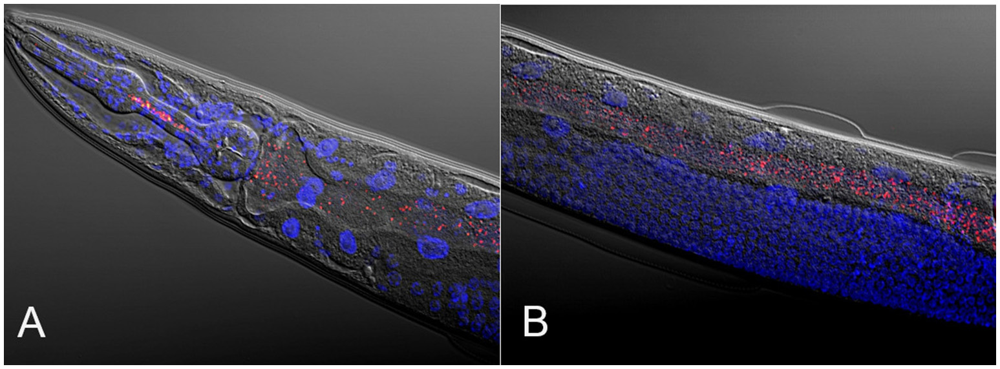
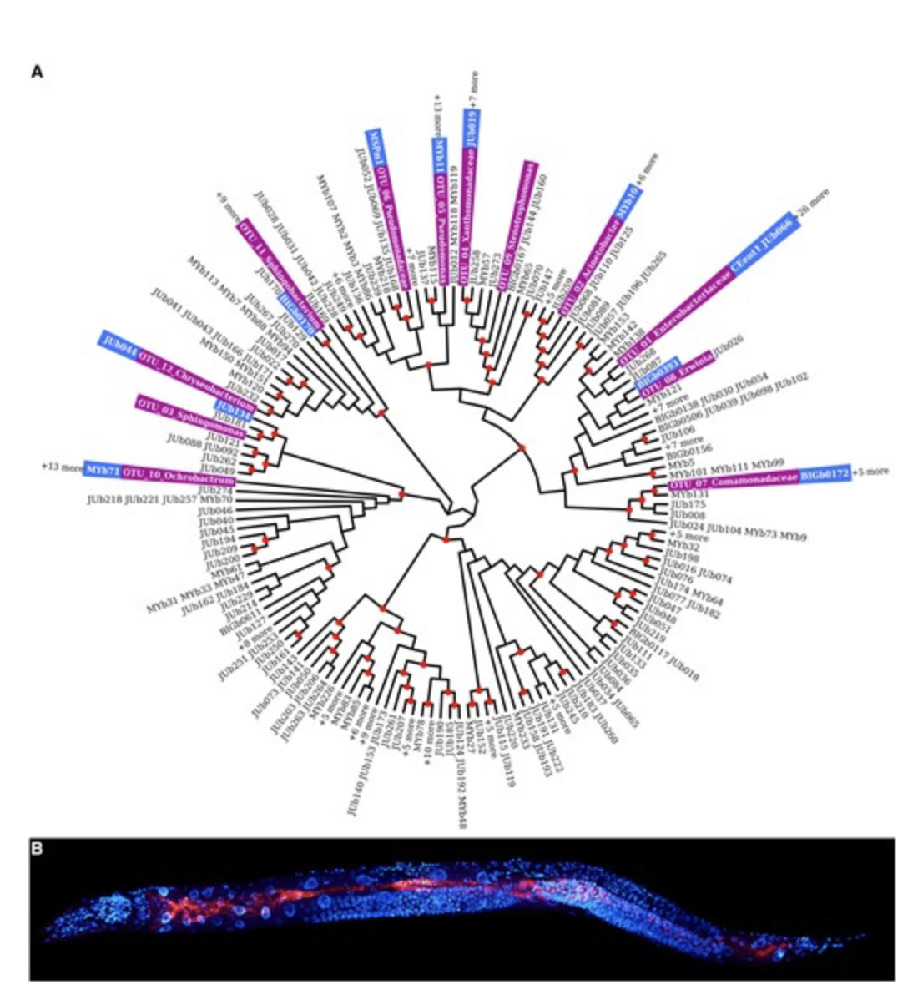
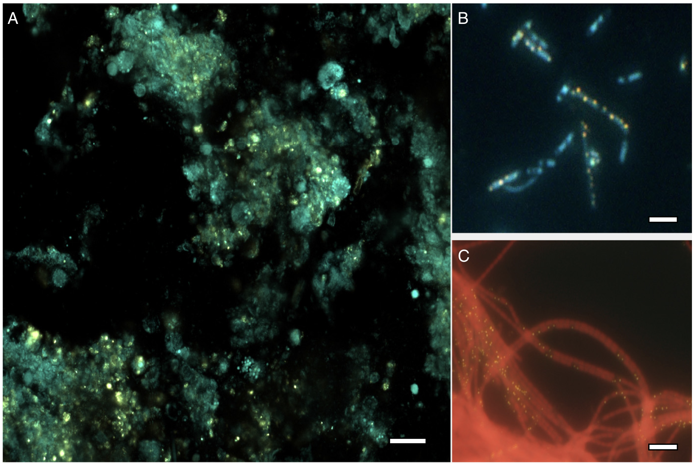
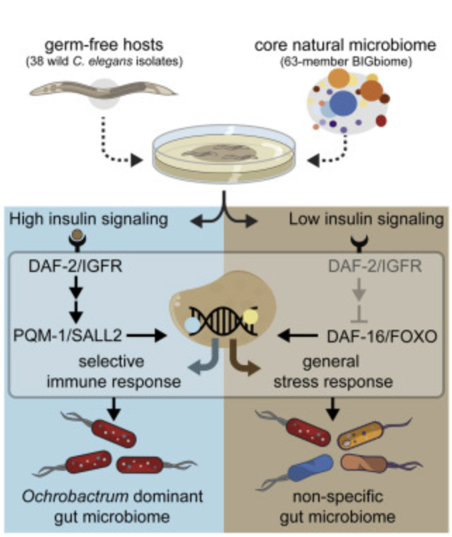

Highlighting selected research from the Zhang Lab.

Exploring C. elegans as a model system for microbiome-host interactions.
Read Article →
A standardized microbiome resource for reproducible studies in C. elegans.
Read Article →
Investigating phosphorus storage by microbial symbionts in marine sponge ecosystems.
Read Article →
Exploring how host genetics shape microbiome composition in the C. elegans gut.
Read Article →